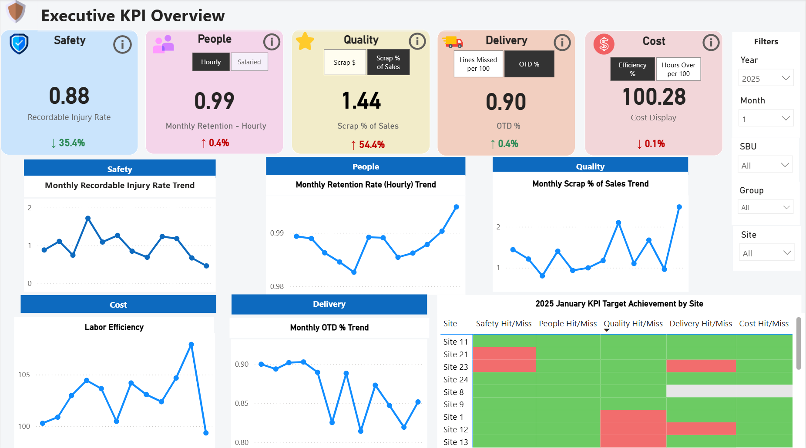
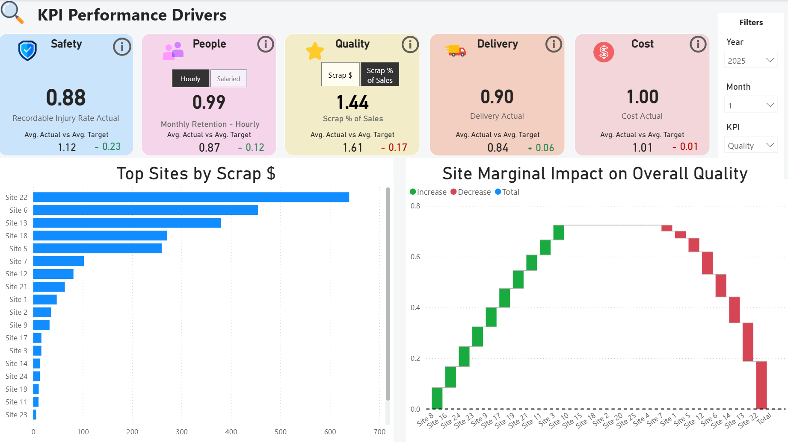
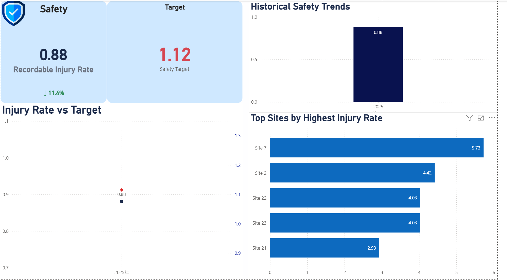
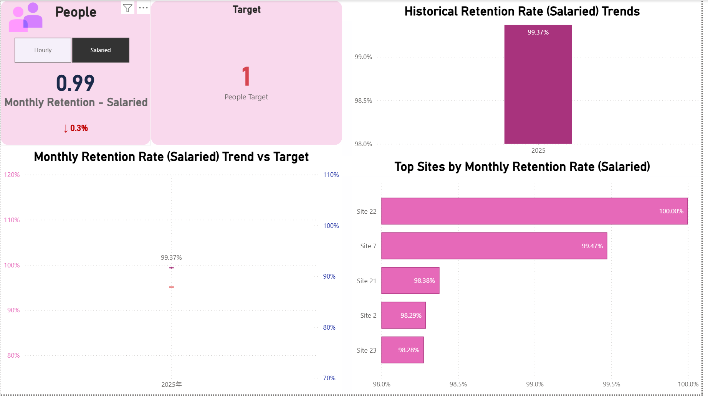
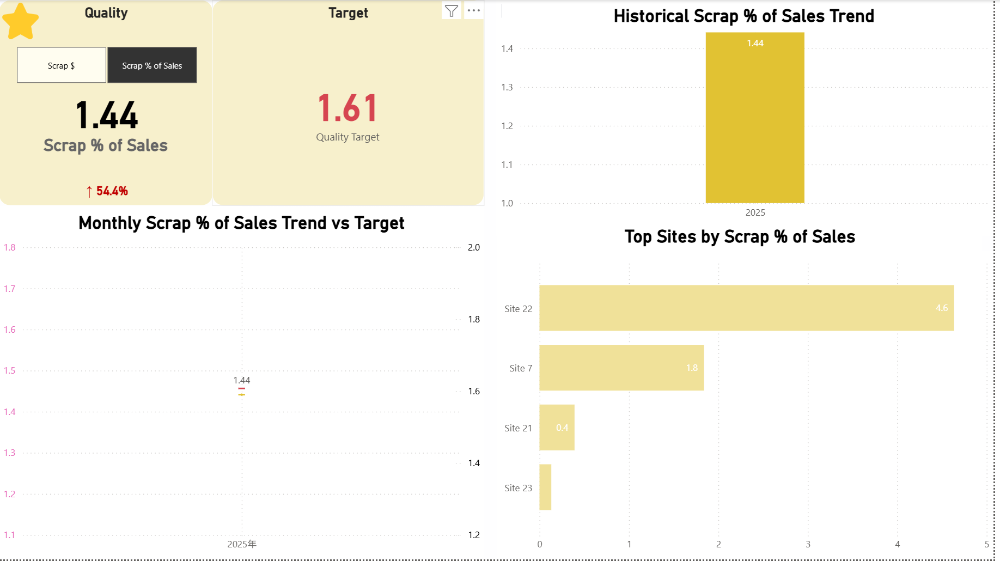
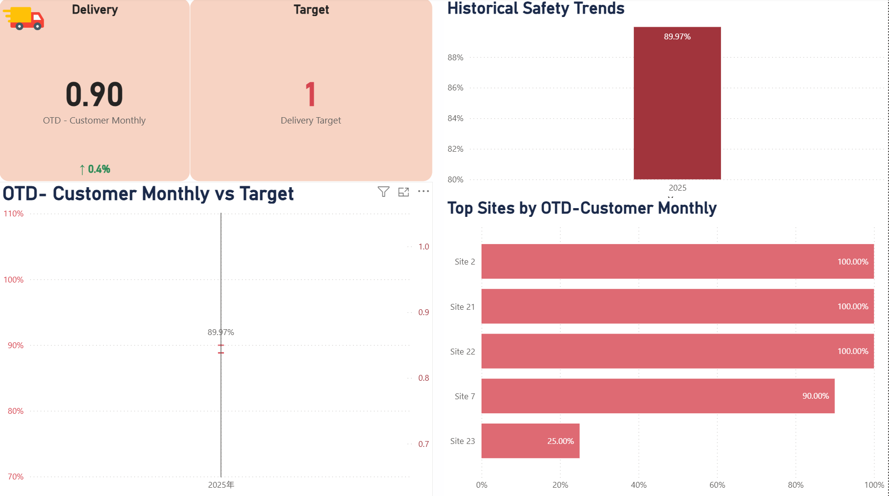
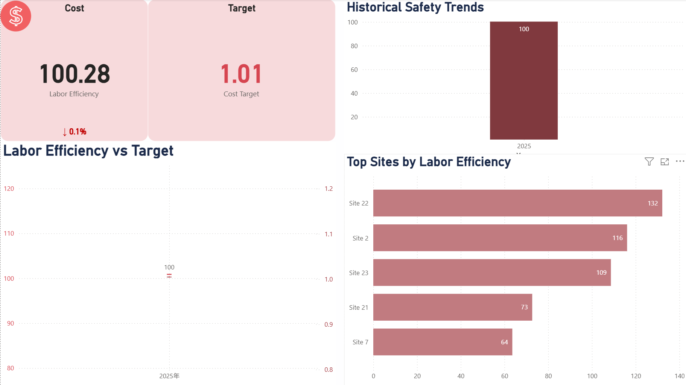

Business Problem
A multi-site manufacturing enterprise with 24 plants organized across a four-level hierarchy — sites → subgroups → strategic business units → corporate — ran monthly operational reviews tracking five KPI categories: Safety, People, Quality, Delivery, and Cost (the SPQDC framework). All reporting was manual and Excel-based, with two structural gaps:
- No attribution. Reports showed company-level percentages only. When a KPI missed target, identifying which site caused it and by how much required manually pulling and reconciling spreadsheets across multiple locations — consuming significant time during every monthly review cycle.
- No volume weighting. A site handling 100 purchase-order lines and one handling 10,000 were treated identically in percentage terms. High-volume misses were invisible alongside small-site outliers — misleading the prioritization of operational interventions.
The stated requirement: identify which site is driving a KPI miss and by how much, in under 30 seconds, without manual spreadsheet work.
Solution
I designed and delivered a seven-page Power BI dashboard that replaced the manual Excel process end-to-end. Four core design decisions shaped the architecture:
- Aggregate raw numerators and denominators — never average percentages. Every roll-up at every organizational level reflects actual site scale. This distinction materially changed which sites ranked as highest-impact contributors.
- Leave-one-out attribution on a dedicated Drivers page. Each site's marginal contribution to the company KPI is computed simultaneously and rendered as a waterfall chart — answerable in under 30 seconds without any manual work.
- Self-service monthly refresh. The data team drops new Excel files into a single folder and refreshes. No preprocessing, no analyst dependency, no structural changes needed.
- Single-direction model relationships throughout. Bidirectional filtering was tested and removed after it produced silent miscalculations at SBU filter level — correct values at site level, wrong values at roll-up — with no error raised.
Technology Stack
System Architecture
Five Excel source files are loaded through six Power Query queries that clean, normalize, and type all values before anything enters the model. The clean data lands in a star schema — one fact table joined to four dimension tables — and 20+ DAX measures compute all KPIs dynamically at query time across seven dashboard pages.
All relationships are single-direction one-to-many. Cascading filters (Year → Month → SBU → Group → Site) update every visual across all seven pages simultaneously.
Key Features — 7 Dashboard Pages
Page 1 · Executive KPI Overview
Five scorecards — one per SPQDC category — with sub-metric toggles (Hourly / Salaried, Scrap $ / Scrap % of Sales, OTD % / Lines Missed, Efficiency % / Hours Over). Five monthly trend lines. A site-level hit/miss heatmap across all 24 sites and all five KPIs, dynamically filtered by year and month.
Page 2 · KPI Performance Drivers
The core attribution engine. Select any SPQDC category; a waterfall chart shows each site's marginal contribution (green = toward target, red = away from target) and a ranked bar chart surfaces the highest-impact sites instantly. Root-cause attribution in under 30 seconds.
Page 3 · Safety
Recordable Injury Rate (incidents × 200,000 ÷ exposure hours) vs. target. Year-over-year historical trend, monthly trend vs. target line, and site ranking by injury rate.
Page 4 · People
Monthly employee retention with Hourly / Salaried toggle. Roll-ups weighted by headcount — not averaged. Historical trend and site ranking.
Page 5 · Quality
Scrap $ and Scrap % of Sales toggle. Monthly scrap trend vs. target and top sites by scrap dollar value — translating quality metrics into direct cost-of-waste language.
Page 6 · Delivery
On-Time Delivery % and Lines Missed per 100 toggle. Volume-weighted OTD trend vs. target and site ranking — high-volume site misses are not masked by percentage-only views.
Page 7 · Cost
Labor Efficiency % (earned hours ÷ actual hours) vs. target. Historical trend, monthly trend, and Hours Over per 100 toggle for operations-level cost visibility.
Dashboard Gallery
Click any screenshot to zoom.

Five KPI scorecards with sub-metric toggles, monthly trend lines, and the site hit/miss heatmap for the selected period.

Leave-one-out waterfall and ranked bar chart — each site's marginal impact on the selected KPI, answerable in under 30 seconds.

Recordable Injury Rate vs. target, year-over-year trend, and site ranking.

Retention rate with Hourly / Salaried toggle, headcount-weighted roll-ups, and site ranking.

Scrap cost and Scrap % of Sales, monthly trend vs. target, and top sites by scrap value.

OTD % and Lines Missed per 100, volume-weighted trend vs. target, and site ranking.

Labor Efficiency % vs. target, historical trend, and Hours Over per 100 view.
Business Impact
| Capability | Before | After |
|---|---|---|
| KPI attribution — which site, by how much | Hours of manual spreadsheet work | Under 30 seconds |
| Files opened per monthly review | Multiple spreadsheets | One dashboard |
| Site-level visibility for leadership | Aggregated % only | All 24 sites across all 5 KPIs |
| Volume weighting in KPI roll-ups | Not applied — all sites treated equally | Applied at every org level |
| KPI calculation logic | Embedded in analyst knowledge | 20+ documented, validated DAX measures |
| Dashboard pages | 0 | 7 — overview, drivers, 5× SPQDC drill-downs |
| Calculation errors at final QA | — | Zero — validated across all 24 sites × 4 org levels |
Technical Deep Dive
Key engineering decisions — for technical interviews and code reviews.
Weighted Roll-Up — Why Averaging Percentages Breaks
- All aggregate KPIs sum raw numerators and raw denominators across sites first, then compute one result — never averaging site-level percentages.
- Concrete example: Site A at 85% OTD on 10,000 lines, Site B at 70% OTD on 500 lines. Simple average = 77.5%. Weighted result = 84.3%. That 6.8-point gap changed the priority ranking of which sites needed intervention.
- The weighted approach is implemented in DAX as raw-sum measures that recalculate correctly at any filter context — site, subgroup, SBU, or corporate.
Leave-One-Out Attribution — DAX Pattern
- For each site: compute the company KPI with all sites included, then compute it again with that site removed using
ALLEXCEPT/REMOVEFILTERS, return the difference. - This difference is the site's marginal impact on the corporate total.
- Runs simultaneously for all 24 sites; results drive both the waterfall chart and the ranked bar chart on the Drivers page.
- No pre-aggregation required — DAX filter context handles scope dynamically at query time.
Validation Framework — Cross-Level QA
- January 2025 selected as the baseline validation period — first month with complete data across all 24 sites.
- Every DAX measure validated against existing Excel source at site, subgroup, SBU, and corporate levels — not just the top-level roll-up.
- Critical insight: a measure can be correct at site level and still return wrong values at SBU level due to filter context differences in Power BI. Cross-level validation catches this class of silent failure.
- Final QA result: zero calculation errors across all KPIs, all 24 sites, all four organizational levels.
Power Query & Data Governance
- Source files used
-1as a "not applicable" sentinel. Converted tonullin Power Query before any measure executes — prevents silent distortion in numerator/denominator sums. - Site names were inconsistent across source files. Mismatches caused sites to silently disappear from visuals (no error, no data) — resolved by standardizing all names in the Power Query step.
- Bidirectional model relationships removed after discovery that they produced incorrect values at SBU-level filter contexts without raising any error message — a silent failure caught only by cross-level validation.
- Sales field in source is cumulative YTD; Scrap % of Sales requires subtracting the prior-month YTD Sales to recover the correct period denominator.
KPI Formulas — Replicated Exactly from Operational Standards
- Safety: Recordable Injuries × 200,000 ÷ Total Exposure Hours
- People: Retained Employees ÷ Total Headcount (separate Hourly and Salaried measures; weighted by headcount at every roll-up level)
- Quality: Scrap $ by site and period; Scrap % of Sales = Scrap $ ÷ (Current YTD Sales − Prior YTD Sales) × 100
- Delivery: OTD % = On-Time Deliveries ÷ Total Deliveries; Lines Missed per 100 = Lines Missed ÷ Total Lines × 100
- Cost: Labor Efficiency = Earned Hours ÷ Actual Hours Worked